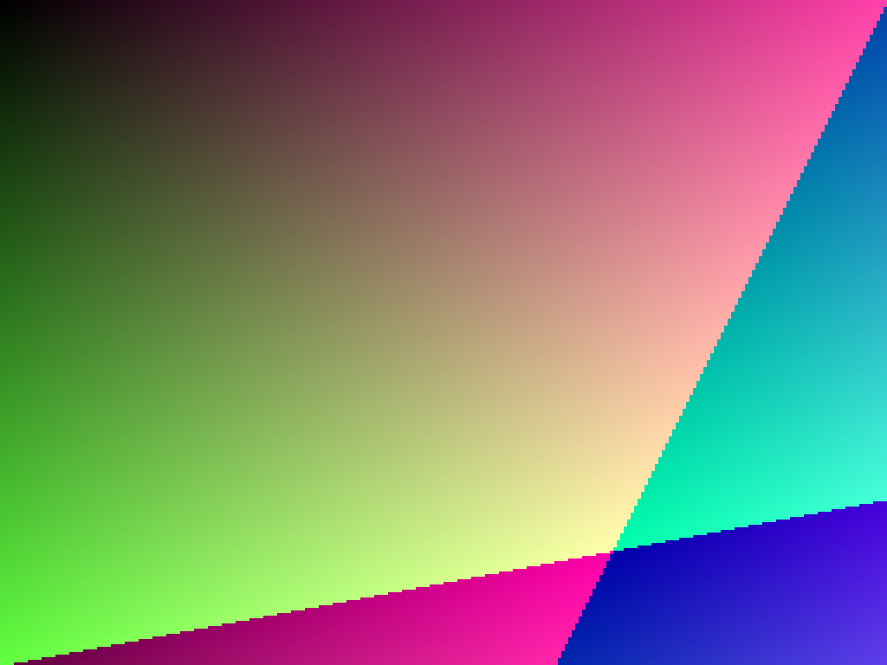

Um fluxo para o lote
Arquivos, pastas e ZIPs. Busca, presets nomeados e exportação com hierarquia.
Converta, redimensione e otimize seus arquivos com controle sobre o resultado. Escolha um preset, confira uma amostra e deixe o lote trabalhar.
Ver releases disponíveisCompilar do código-fonteArquivos, pastas e ZIPs. Busca, presets nomeados e exportação com hierarquia.
Gere uma amostra com seus ajustes, compare com zoom e acompanhe o indicador SSIM.
JPG, PNG, WebP, BMP e AVIF. Redimensionamento em proporção e entrada SVG rasterizada.
Este exemplo usa uma imagem sintética de 1024 × 768 e a saída WebP em qualidade 80 gerada pelo pipeline Rust. Arraste o controle para comparar.

A economia depende da imagem e das configurações. SSIM é um indicador aproximado de luminância, não uma garantia de qualidade visual. Benchmarks de produção contra concorrentes ainda precisam ser medidos.